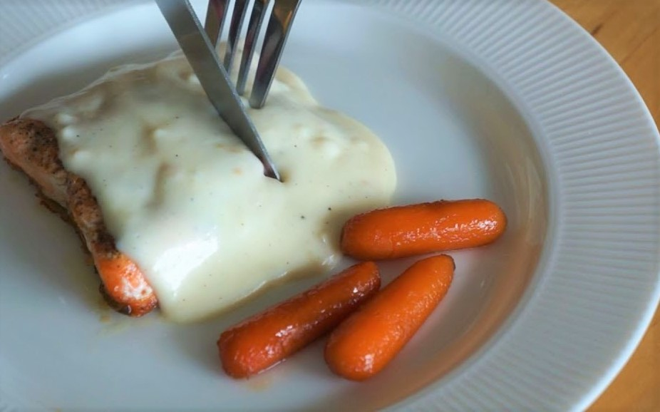

Salmon with cream sauce - Porco Rosso
Porco Rosso’s salmon dish doesn’t have an official name, but avid stans of Studio Ghibli have noted that it’s basically a salmon steak with cream-based gravy and baby carrots on the side. While the following recipe isn’t exact, the resulting dish does look very similar to the OG dish spotted in the anime film.
Ingredients:
- 2 to 4 salmon fillets
- 1 packet of baby carrots
- 1 cup of water
- 6 tbsp of butter
- 2 tbsp of brown sugar
- 2 tbsp of fresh lemon juice
- Salt
- Black pepper
- 2 tbsp of all-purpose flour
- 1 cup of milk
Instructions:
- Salmon:
- Remove salmon skin and season the salmon with salt and pepper.
- Add 2 tbsp of butter into a saucepan and heat on medium-low. Fry the salmon until both sides turn golden brown.
- Cream sauce:
- Melt 2 tbsp of butter in a saucepan over medium heat. Add chopped garlic and shallots. Stir well until the garlic turns light brown.
- Lower the heat to medium-low and add flour. Mix well until the mixture thickens.
- Add milk while stirring. Mix until the mixture thickens again.
- Glazed baby carrots:
- Add baby carrots and 1 cup of water until it boils. Poke the carrots with a fork to check if it is soft enough.
- Drain the baby carrots and add 2 tbsp of butter. Add salt and pepper as seasoning.
- Add 2 tbsp of brown sugar. Mix well until the mixture thickens.
- Transfer the salmon onto a plate and pour the cream sauce over it. Place the glazed carrots on the side of the plate.